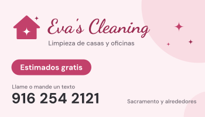

Shown at actual size. To print at home: Print → set scale to 100% / "Actual size", margins none.
tarjeta-con-sangrado-3.75x2.25.svg. It has the 0.125 in bleed they ask for. Everything important stays inside the 3.25 × 1.75 in safe area.tarjeta-3.5x2.svg.